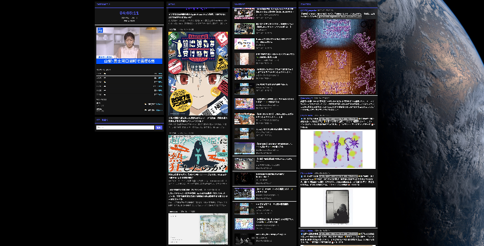
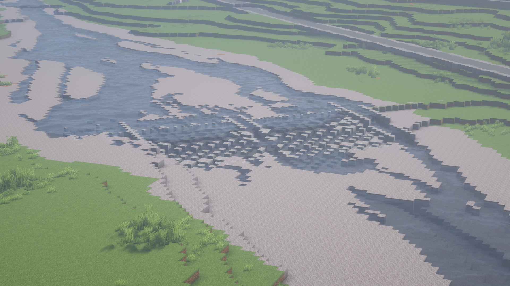

2026 W/S 日記
hazuqu

普段Scrapboxで日記を書いていて、せっかくなので半年単位でまとめて公開しようと思いました。
つくったものたち
1月
去年から文字PVをする際に歌詞の印象と文字の位置・方向を体系にして楽になろうと思っていましたが、その外伝で文字の形状に合わせた頂点単位のアニメーションを考えました。
ここで遊べます。が、一度更新しないとフォント読み込みでバグがあるみたいです。
#Harmony0118でVJをしました。WOMBに私がいつも使っている茶碗がでていて面白い。
 詳しくは生活VJ ( 𝐼𝑑𝑒𝑜𝑎𝑣𝑒𝑠 )に書いています。
詳しくは生活VJ ( 𝐼𝑑𝑒𝑜𝑎𝑣𝑒𝑠 )に書いています。ツール規模では資料画像を軽く整理するツール ( 𝐼𝑑𝑒𝑜𝑎𝑣𝑒𝑠 )を作っています。
2月
美学ウィキというCosenseプロジェクトを作りました ( 𝐼𝑑𝑒𝑜𝑎𝑣𝑒𝑠 )。ローカライズ、キュレーションと消費生産の中間に位置したプロジェクトですが、理解されにくい位置にいるなと思いました。これはのんびり今も続けています。
友人の卒制である創儀に口出しをしたりインタビューを受けたりしました。
 未完成創作物のための葬儀をコンセプトとしていますが、その作品を提供したインタビュイーの人選やその職種が面白いので是非見てください。
未完成創作物のための葬儀をコンセプトとしていますが、その作品を提供したインタビュイーの人選やその職種が面白いので是非見てください。MVだとにっけいさんとしたpsycheが面白いかも知れません。
水槽ごしに映像を流して撮影したもので、メイキングもあります。
あとはUscoolのぽやしみブルーライトも。
ローカライズWebcore/Dreamcoreをやろうとしたものです。古いウェブをMicrosoftの規定デザイン（大人）と個人サイトの煩雑なデザイン（子供）で使い分けてみました。
美学ウィキの本懐は、ネット美学ミームの誤用と変異です。
3月
いくつかMVを投稿したほか、inputに専念した月でした。久々のウェルな2DMVでRumBlue - Blue PoisoNがあります。
背景に出る不規則なチェック柄のために、音楽ファイルのHzからストライプを出すp5.jsスケッチを書きました。
置いておきます。
hylenさんの音楽となぜかよく出会います。ウルトラリズムとか、ららいおんの生誕ライブのOLとか。
またAEでの制作に際して細かな時短のために、
ランダムフリーズ.jsx（seedRandomの"index"を定数にしてindexが変わっても同じ値になるようにする）
制御自動追加.jsx（位置パラメーターにスライダー制御をつける）
歌詞書き換え.jsx（1文字ずつ分解したテキストレイヤー群を別の文字列で一括置き換えする）
などのスクリプトが生成されています。動くか不明ですがファイルを置いておきます。動かなかったらAIに言ってください。私も常にAIにその制作フローごとに書き換えてもらっているので。そのまま使ったことがない…
4月
私のした26年エイプリルフールの解説 ( 𝐼𝑑𝑒𝑜𝑎𝑣𝑒𝑠 )があります。ミフメイfeat式部めぐりの秒速のMVがでました。
このあたりからグラデーションに関してOKLCHやその他変になる色空間で遊んでいます。
ウェルなものだと音乃瀬奏のアイネクライネCoverがあります。
円形のピアノ鍵盤はp5スケッチです。自由に使ってください
Bongo Kanadeを作ったりして奏にハマっているのでとても嬉しかったです。
2DMVはワンシチュエーションを求めるのでどう発展させるか手こずるのですが、今回は実際にギターにぬいぐるみを突っ込んでいる方もいてうまくいったかなと思っています。
5月
ProjectCirclesにて椎乃味醂さんのライブのVJフッテージを作りました。 背景はLandsat等の航空写真を、手前はCavalryで試作したSurveillance
Aesthetic（監視カメラの美学）のグラフィクスを置いています。曲が『知っちゃった』なので
背景はLandsat等の航空写真を、手前はCavalryで試作したSurveillance
Aesthetic（監視カメラの美学）のグラフィクスを置いています。曲が『知っちゃった』なのでまたCDsのライブセッションでVJフッテージを用意しました。
今月はCavalryの導入をしたばかりでしたが、結構な作業がAftereffectsからCavalryに移行しています。おすすめ。
6月
hanare - 吐々これもコンポジット以外はCavalryです。多分皆が使い始めたら、このAE的でない感じも一般的になるだろうと思うので、先にやっておきます。
非常に高品質なスリットスキャン（Passing）が流れてきたので、撮影協力なしでできないか模索しています。
絵文字でかける筆のp5スケッチを作りました。
 試し書きにはよく「而」の草書体の一種（単に漢字形と意味が好きなので）を使うのですが、どの書体見本だったか忘れてしまいました。書家単位の見本がインターネット上ではほとんど無いですよね。
試し書きにはよく「而」の草書体の一種（単に漢字形と意味が好きなので）を使うのですが、どの書体見本だったか忘れてしまいました。書家単位の見本がインターネット上ではほとんど無いですよね。Claude codeを導入しました。1円も使っていませんと言っていましたが手元のAIが力不足になってきました。
それで試しにRSSリーダーとAPIを纏めたページをローカルに作りました。アルゴリズムの呪縛にも理想郷の人數の少なさにも対応できるものだと思います。正直お行儀のいいものではないですが。
お気に入りのポイントはリアルタイムでひまわりの衛星写真を表示していて、昼夜と凡その時間がひと目でわかるところです。

見たものたち
ただの日記の開示です。というか、個人的な行動を除けばほとんどDiscord鯖に共有しているので、そっちを見たほうが良いかも知れません。
1月
フランス料理の店に標本みたいな野菜のスペシャリティ。分子ガストロノミーについて調べて色々調理方法を見ました。液体窒素が汎用されていて面白いです。
6桁以上のコースの動画を見るのが好きです。
JCTの二酸化炭素濃度測定器 ZGm27を導入しました。なんとPCにデータを送れるので、つまり映像に利用できるのですが、いまのところアイデアがないです。呼気をつかったインタラクション？
元素楽章という元素の擬人化コンテンツのゲーム実況を見ました。一つの憧れとしてこの類のコンテンツ制作に興味があります。
日本語についてネットサーフィンをしました。
韻文の言語リズムにみられる韻律フレーム型
日本語コーパスの一覧
手書き入力データ
友人のDiscordで16世紀フランスのタイポグラフィの本の読書会がありました。読み方を一切知らない言語の本は、知っている人の読書の様子を眺めるしかない……
後半では美学ウィキのクローズド制作をしていました。
美学ミームには、名付けを行う人が内側にいて、外側にいる人がその体系を見て拡張して、というサイクルに表現の多様化を期待しています
とか命名されるのは嬉しくない
・例えば日本発のゲーム周辺UIが一絡げに”禅”と称されていることに仄かな嫌さがある
・案：「-kei」に準ずる「-的な」とか「-っぽさ」という接辞を作る
みたいなことを話していました。・例えば日本発のゲーム周辺UIが一絡げに”禅”と称されていることに仄かな嫌さがある
・案：「-kei」に準ずる「-的な」とか「-っぽさ」という接辞を作る
2月
芸術新潮の攻殻機動隊特集で「退職するには一部の記憶と義体を返還しないといけない」という点で企業所属VTuberを想起する話があり、VTuberを題材にしたSFの方向として面白そうだと思いました。美学ウィキの公開後、かなりの反響をもらい修正作業にかかっていました。とくに「Fairypageのブログ記事を参照したほうが良い」という話があり、英訳に自身がなかったため、Discordで3人ほどと英訳作業をする日があり、大学を思い出す時期でしたといっても大学に居たときよりも辞めたあとの方が大学生との共同作業が増えていて、私は年齢的にも今が大学生だと思っています。
中旬に救急車を呼んではじめての救急を受けました。受け答えが淡々としていて、よほどの危機でないと映画に出てくるような焦った感じではないようです。
tiktokの動画編集を試しました。私は数カ月に一回流行っているフォーマットの再現をしています。「死ぬ死ぬ界隈」や「嘘雑学」に代表される読み上げはHoliday Twistという名前でtiktokのプリセットに入っています。
外に出ることが出来ない状態だったので友人を家に呼んでみました。本を貸してもらい、DJをしました。
QGISを導入して70年代の建築の点群を整理しました。横断年表(昭和40年代中心)もそうですが現在私は70年代の昭和レトロの再発明、または独自の『昭和Punk』の作成を目論んでいます。恐らくアニメーションかMVを媒体にするでしょう。
3月
樋口恭介「イアン・マッケイについて思い出したこと」｜anon pressDelivers Peopleやサイバースペース独立宣言を見てネット以前のハックについて調べました。
Windsurfを導入してWeb制作を円滑にしました。無料版です。私はいまのところAI関連技術に1円も支払っていません。
テレビのグリッヂを細分化するために電波障害の傾向と原因や映像のグリッヂのアーティファクトを読むなどしました。
Shortやtiktokで見られる過剰なシャープエフェクトについて、cap cutのスマートシャープというエフェクトが原因でした。意図的かつそれを良しとしています。
Webデザインで背景をミディアムグレー（60-80%）にすると素人っぽく感じます。黒にすると玄人的な個人に、白（90-98%）にすると企業的に、白（100%）にすると背景色からは人物像が推定できなく感じます。
4月
Y2Kグランジファッションを探しました。厳選してこのようなリストに。LUV CODE 韓国セレクト
A'GEM/9×.KOM 韓国セレクト ストリート系
faithtokyo ちょっとゴスすぎだけど時々良いのがある。
reflem 地雷系寄りのストリート。
三体問題の惑星から見たシミュレーション。恒星に近づいたりすると生命が絶滅します。箱庭のようで眺めていて嬉しい。
5月
ギターをやっていて、「物事のコツをつかむ」というのは「物事のFをつかむ」とも言えるなと思いました。学術V（サイエンスコミュニケーターに近い活動をしているVTuberのゆるやかな総称）がTRPGの狂気山脈シリーズをプレイしていたので、この月に各視点をゆっくり見ていました。学術Vは好きです。
三点クイズというものを考えました。
例えば「Q. 心身ライス、なーんだ」というお題があったときに、その対義語は「肉体的カレー」であり、この２つを繋ぐ線から垂直に伸ばした先の単語で、最も一般語彙になるものが答えになります。「A. 精神的支柱」
（お代と対義語は存在しない単語でよくて、三単語が三角形になればOKです。逆に言えば2点でただの類義語にしかならないならお題ではないです）
宇宙の描写について、適当な星図を用いていましたがCartes du Cielという星図ソフトを導入しました。また過程でspacekit.jsも触ってみました。
Blenderでカメラのデフォルトの位置を1.5mの高さの垂直向きにできるpyを描きました。Scriptingに貼ってデフォルトにすると、変な位置のカメラを原点に動かす必要がなくなります。
この月にやっと外に出られました。
6月
実家の静岡へ帰省しました。
これはホテルからの景色
和洋食のコースが出てきてマナーをどうすべきか迷いました。帰りに静岡市美術館に寄りました。水木しげる展の時期で当時のガロが置いてありました。帰りにエッシャーの本を買いました（帰ったら既に本棚にありました；；）
昭和Punkについての活動：
ハイレッド・センターに関する書籍を浚いました。
ブルーボーイ事件、マイ・バック・ページの映画を見ました。
Chrome拡張で和暦を西暦に変換するものを作りましたが、うまくWikipedia上の日付を変換できません。理由はページごとにhtml表記がバラバラなためで、正規表現で書いたとしても補えず、壊れたまま使っています…
potatolandのShredderがまだ動くことを知って色々なサイトを突っ込みましたが、今の主流のSNSや動画サイトはサムネイルが表示されないのであまり面白い結果になりませんでした。
農地での排水について勉強しました。単純化すると河の途中に堰で川水を貯めて、取水口から取り出した水は水路本流を進み、それぞれの田畑に分けられ、最終的には本流に戻った後に排水樋門を通って川に出る。地域が水没する危険のある場所では排水機場がありポンプを使って機械排水樋門を通るようです。
これはシャノンさんによるMinecraftの企画「#志岐半島開発局」での協力に役立ちます。

堰
部屋の片付けをしています。今住んでいる場所に不満はないのですが、4年目なので別の家に行けるようにしています。
理想を言えば吹き抜けがあり、打ち放しのコンクリートの壁があり、車のうるさい家がいいです。R不動産に良いところがありましたが、駅から遠くて悩んでいたら取られてしまいました。
♥
⤴